Three.js Examples
Thumbnails for three.js exampleswebgl
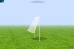 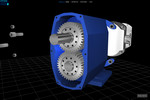 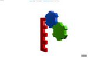 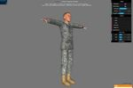 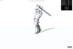 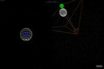 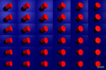 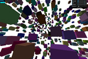 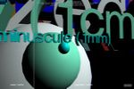 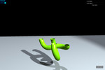 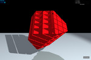 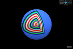 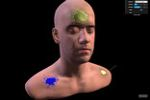 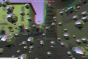 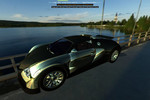 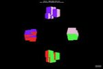 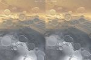 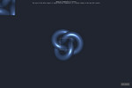 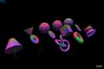 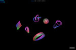 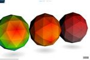 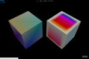 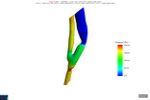 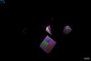 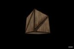 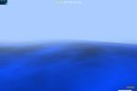 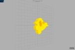 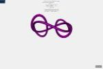 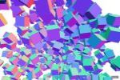 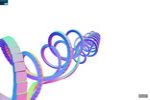 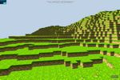 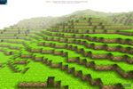 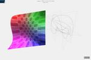 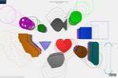 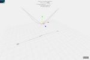 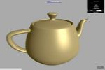 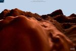 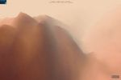 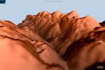 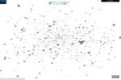 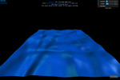 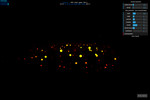 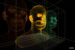
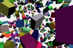
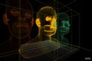
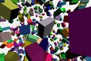
 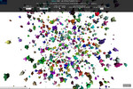
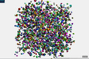
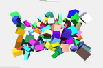
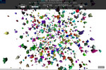
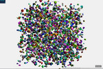
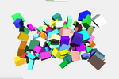
 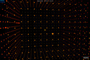
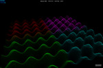
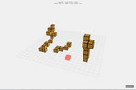
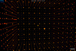
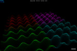
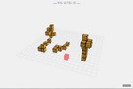


webgldeferred

webglaudio


webvr


misc


css3d


canvas


raytracing

software


svg


Download this site. Something wrong or missing? Contact Eric Haines.
Go to the WebGL/three.js resources page.
Last updated February 14, 2018